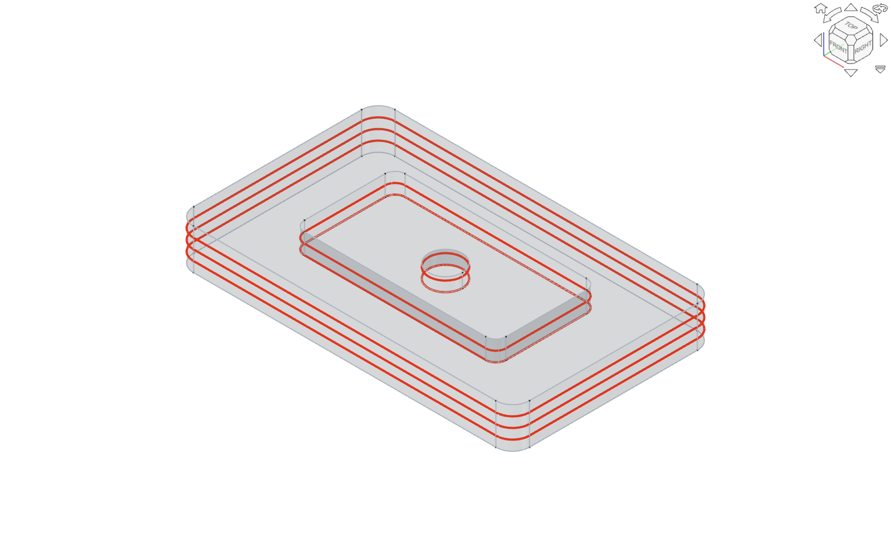
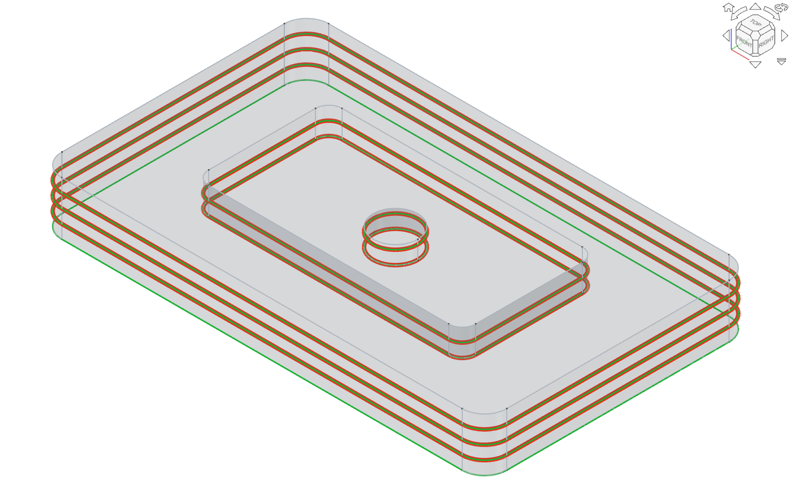
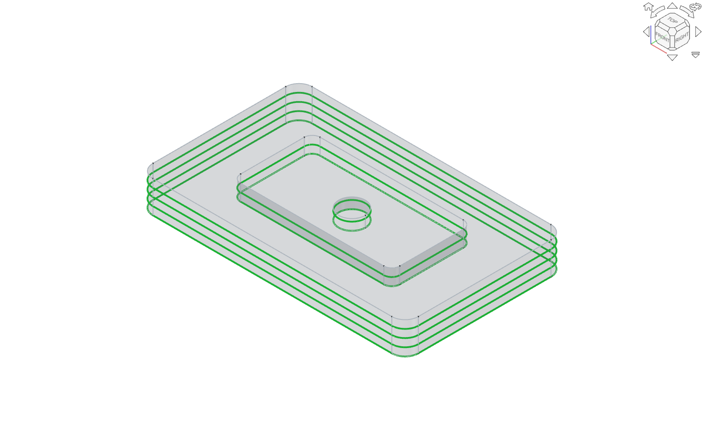
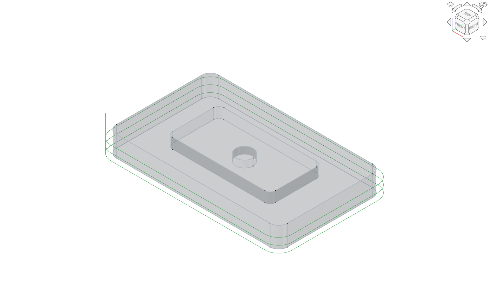

please
CAM unit tests with the PR applied: Ran 2230 tests · OK (skipped=11, expected failures=4)




The requester's note ("please") asked for nothing beyond a normal review.
One function: Part::CrossSection::sliceSolid (src/Mod/Part/App/CrossSection.cpp). Before, after cutting the solid with a half-space, it looked through every planar face of the result and kept those lying on the slice plane within the edge tolerance plus fuzz. Now it asks the boolean for the images of the half-space face (mkCut.Modified(face)) and uses those faces' wires.
Who uses it: CAM's Area sectioning (Area::makeSections in src/Mod/CAM/App/Area.cpp), so Pocket, 3D Pocket, MillFace, Profile with slicing, and the CAM Area feature. It also feeds the C++ TopoShape::slice. Python's Shape.slice and the Part Cross-sections tool go through TopoCrossSection (element-map version), which this PR does not touch.
The forum model could not be downloaded on this machine, so I built a stand-in: a 100 x 60 x 12 mm plate with rounded corners, a 60 x 30 x 6 mm filleted pocket and a 10 mm round island, converted to B-spline faces (toNurbs()) with its tolerance raised to 1e-5 mm, as many STEP imports come in.
CAM Area sections of the plate (SectionMode BoundBox, SectionCount -1), main build vs PR build:
| Step-down | main levels (Z) | PR levels (Z) |
|---|---|---|
| 4 mm | 8, 4 | 8, 4, 0 |
| 3 mm | 9, 6, 3 | 9, 6, 3, 0 |
| 2 mm | 10, 8, 6, 4, 2 | 10, 8, 6, 4, 2, 0 |
At every step-down, main loses the bottom section: the "bottom pass missing" from the forum thread. The PR restores it (one wire, 5978.5 mm², the full plate outline). See area_sections_main.png, area_sections_pr.png, area_sections_overlay.png and the video.
The same pattern shows in a direct slicer probe: a stepped solid converted to B-spline with tolerance 1e-5 or 1e-3, and a B-spline pocket with an island, return an empty section at the bottom on main and the full 2000 mm² outline on the PR. At 1e-7 tolerance both agree.
--build-a = main's own C++)The full CAM suite passes: 2230 tests OK (11 skipped, 4 expected failures). The PR adds no test. A regression test slicing a B-spline, loose-tolerance solid at its bottom (as above) would protect this against future OCC changes; this is the third rework of this check.
CrossSection.cpp:152: the review asked whether Modified(face) could come back empty when the slice plane lies exactly on an existing face, because the boolean might keep the solid's own coplanar face. Not reproduced: slices exactly on box tops and bottoms, step ledges, pocket floors and island tops, in plain and B-spline/loose-tolerance versions, all matched main or improved on it.TopoShape::slice/slices. Python Shape.slice and the Part Cross-sections tool are not affected. (tested for Python Shape.slice)Shape.slice uses TopoCrossSection::sliceSolid, which still has the old strict Precision::Confusion() plane test. On the imported-style plate it returns no wires at Z 1e-6 and 1e-5 on main and on the PR. Python CAM code that slices with it (Profile.py, PocketShape.py, MillFacing.py, Slot.py, Waterline/Surface support) could still miss a bottom on such models. The same idea could be applied there in a follow-up.#include <BRep_Tool.hxx> in CrossSection.cpp is no longer used.Area.cpp (around line 2037) that says slicing "already handles boolean tolerances correctly" referred to the tolerance logic this PR removes.